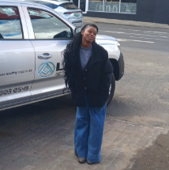
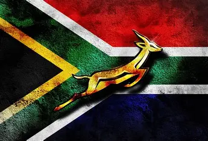

Kekeletso Nhlapo
About Me

My name is Kekeletso Nhlapo but you can call me Keke. I am from South Africa, Free State in a small town called Bethlehem. I am the youngest of three children, and I have a dog. His name is Sawyer and he is a German Shepherd. I served a mission in Ghana, the best 18 months of my life! I got to learn more about my Savior, the gospel, myself, and the Ghanaian culture, plus the language! I am a student at Brigham Young University-Idaho. I am currently studying Software Development. I have always been passionate about technology and programming, and I am excited to further my knowledge and skills in this field.
South Africa

South Africa is a diverse "Rainbow Nation" with 12 official languages, three capital cities(Pretoria, Cape Town, Bloemfontein), and a rich history of cultures and traditions. It is known for landmark achievements like the first human heart transplant in 1967, hosting the 2010 FIFA World Cup, and producing the world's largest diamond. The South African national rugby team, the "Springboks" is the only team to have won the Rugby World Cup 4 times and has never lost a final. Rugby is the one sport that brings South Africans together.